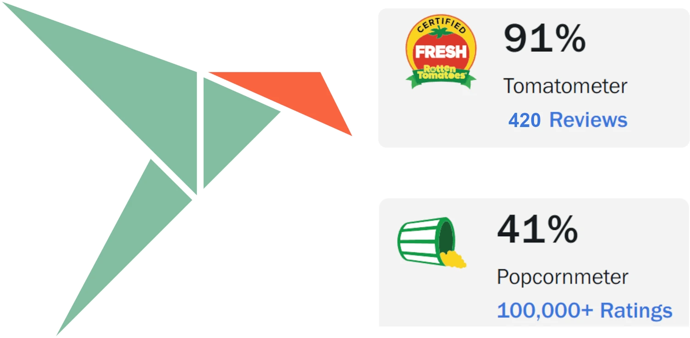

Snap is good, actually
Many people online are convinced that the Snap package format was created in order to dominate the Linux world. It wasn't. Here's why Snap exists and why you might actually like it if you give it a try.
Table of contents
Similarities between Cosmic and Unity
"[The decision] meant that we couldn’t have on our books (effectively) very substantial projects which clearly have no commercial angle to them at all."
. . .
"Emotionally I never want to go through a process like that again. I made some miscalculations around Unity. I really thought industry would rally to the idea of having a free platform that was independent."
• Source